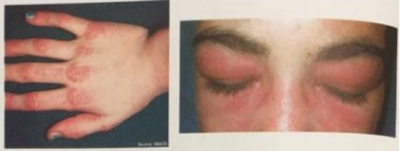

O sinal ou pápulas de Gottron e poiquilodermia são sinais cutâneos de
Marque a associação correta em relação a lesões de pele caracteristicamente encontradas nas doenças auto imunes.
A alternativa que NÃO corresponde aos sinais ou sintomas presentes na Dermatopolimiosite é
Mulher, 30 anos, apresenta quadro de fenômeno de Raynaud, poliartrite simétrica não erosiva de pequenas articulações há cerca de 5 meses. Há 2 meses, com dispneia, evidenciando-se ao exame de imagem (tomogra a computadorizada de tórax) doença intersticial pulmonar. Apresenta também miosite, presença de FAN (anticorpo antinuclear) e anti-Jo 1 positivo. O diagnóstico mais provável é
Que conduta se deve tomar para uma paciente de 66 anos de idade portadora de dermatomiosite e com resposta não satisfatória ao tratamento com doses efetivas de corticosteroide.
Homem, com 60 anos, apresenta quadro insidioso de disfagia, rouquidão e fraqueza muscular proximal e distal assimétrica. Exame físico: atro a dos músculos exores profundos dos dedos e da região anterior das pernas. Exames laboratoriais: aumento das enzimas musculares. Eletroneuromiogra a: miopatia proximal e distal. Iniciado tratamento com corticóides e imunossupressores, sem melhora. A hipótese diagnóstica mais provável é:
Jovem de 22 anos foi internado devido a quadro de fraqueza muscular progressiva com di culdade de pentear o cabelo e subir escadas, além de febre, perda ponderal e dispneia progressiva nos últimos meses. Ao exame físico, apresentava fraqueza muscular proximal, presença de rash cutâneo em região periorbitária, hiperceratose palmoplantar, além de crepitações bibasais. Os exames complementares revelaram anemia normocítica e normocrômica, CPK = 2.000 U/L e VHS = 100 mm/h. A tomogra a computadorizada do tórax evidenciou in ltrado intersticial com padrão de vidro fosco bibasal. Entre os exames sorológicos, o mais indicado para o diagnóstico do caso desse paciente é:
Um senhor de 78 anos é atendido com quadro de edema periorbital eritematovioláceo, pápulas eritemato-descamativas no dorso das mãos, além de dor e fraqueza muscular nos ombros e braços. Assinale a alternativa correta em relação à provável alteração laboratorial desse caso clínico.
Assinale o (os) exame(s) que fornece(m) o diagnóstico de certeza de dermatomiosite.
Na ocasião do diagnóstico das miopatias inflamatórias, é considerado fator de mau prognóstico:
Das doenças autoimunes listadas abaixo, uma delas está associada ao risco maior de neoplasias malignas, justi cando a pesquisa de neoplasias ocultas quando do seu diagnóstico. Assinale-a.
Homem, setenta anos, com astenia há seis meses, associada à di culdade de subir escadas e elevar os membros superiores acima da cabeça. Apresenta também xerostomia e lipotimia ao levantar-se. Ao exame físico, verifica-se queda da PA em ortostase e redução da força nas regiões proximais dos membros superiores e inferiores, com melhora quando o teste é repetido. Qual a hipótese diagnóstica mais provável?
As miopatias inflamatórias são um grupo heterogêneo de doenças que se caracterizam por fraqueza muscular proximal e elevação sérica de enzimas originadas da musculatura esquelética. Sendo INCORRETO que
Investigação para neoplasia adequada à faixa etária do paciente está indicada quando houver diagnóstico de:
Paciente em uso de hipolipemiante (estatina) desenvolveu quadro de rabdomiólise. Porém, após a retirada da medicação, não houve melhora da fraqueza muscular e não houve queda dos níveis de CPK (Creatinofosfoquinase). Podemos considerar que esta rabdomiólise está associada a:
Mulher de 32 anos de idade apresenta há 3 meses as lesões a seguir: Queixa-se também de fraqueza muscular e disfagia. No exame clínico, apresenta força muscular grau IV proximal em membros superiores e inferiores, além das lesões apresentadas. O restante do exame clínico está sem alterações. A principal hipótese diagnóstica é:

O sinal ou pápulas de Gottron e poiquilodermia são sinais cutâneos de:
Uma paciente jovem queixa-se de fraqueza muscular proximal nos últimos quatro meses. À avaliação, apresenta fraqueza muscular proximal nos membros superiores (força muscular grau 4-) e inferiores (força muscular grau 3). À ectoscopia, apresenta pápulas acastanhadas sobre algumas articulações metacarpofalangeanas das mãos. A dosagem de creatinofosfoquinase (CK-T) revela níveis superiores a 6.000U/L. É indicada biópsia muscular, que revela in ltrado inflamatório perivascular e perimisial, com evidências de atrofia perifascular, o que indica o diagnóstico de:
Em um paciente com fraqueza muscular proximal simétrica, febre baixa recorrente, elevação moderada da aldolase e eletroneuromiogra a sugestiva de miopatia, é formulada a hipótese diagnóstica de polimiosite. Nesse contexto, a positividade do anticorpo anti-Jo-1:
PP, 47 anos, com fraqueza muscular proximal, artrite de punhos, metacarpolfalangeanas e interfalangeans proximais. Evolui com dispnéia mesmo em repouso, tosse seca e estertores finos em regiões infraescapulares. Você não indicaria :
Homem, 60 anos, com histórico de fraqueza muscular progressiva por 10 anos evoluindo no último ano com leve disfagia e disfonia. Relatava ser hipertenso e dislipidêmico em uso de estatinas há vários anos. Ao exame físico, apresentava fraqueza muscular proximal e distal em membros superiores e inferiores de padrão simétrico. Níveis de CPK (Creatinofosfoquinase) estavam aumentados em duas vezes o valor normal. Na eletroneuromiogra a, observaram-se a presença de sinais de miopatia (potenciais polifásicos de curta duração, com amplitude baixa e brilações). Realizada biópsia muscular com evidência de in ltrado inflamatório mononuclear, bras musculares não necróticas e presença de vacúolos marginados. Dos diagnósticos a seguir, o mais adequado é:
O Sinal de Gottron é patognomônico da (o):
M.K.L., masculino, 32 anos, advogado, internado com quadro de fraqueza muscular em MMII com prejuízo da deambulação, associada à disfagia para sólidos e manchas violáceas em região periorbital bilateral e pápulas eritematosas em face extensora de cotovelos e joelhos. Qual exame deverá ser solicitado para elucidação etiológica?
As alterações observadas na pele que são definidas como “mãos de mecânico” caracterizam a seguinte doença difusa do tecido conjuntivo:
A presença de heliotrópio e de Sinal de Gottron, ao exame clínico, sugere o diagnóstico de:
Paciente feminina de 48 anos, natural de Cascavel, apresenta previamente quadro de HAS e DM tipo 2, atualmente bem controlada com enalapril e metformina. Há 3 meses começou a apresentar astenia e artralgia de articulações das mãos, associado à edema, eritema e descamação, moderadamente pruriginoso em face, região do decote e membros superiores. Notamos também eritema violáceo em região de pálpebras. Apresentava por m lesões papulares em dorso de articulações interfalangeanas e cotovelos, além de telangiectasias em unhas. Sobre a sua hipótese diagnostica, é correto afirmar que:
Qual o anticorpo na dermatomiosite que, quando positivo, sugere um curso agressivo da doença e um envolvimento pulmonar frequente?
O sinal de Gottron (lesões cutâneas no dorso das articulações interfalangianas proximais e metacarpofalangianas) e o heliótropo (eritema violáceo peripalpebral) são característicos da seguinte patologia:
São anticorpos miosite-específicos:
Paciente de 32 anos, masculino, relata o aparecimento de fraqueza muscular proximal, com di culdade para subir escadas e elevar os braços, rash cutâneo eritematovioláceo em região periorbital, além de manchas violáceas nas superfícies extensoras das articulações metacarpofalangianas e interfalangianas proximais e distais, com evolução há 2 meses, piora progressiva, seguida de disfagia, disfonia e dispneia de repouso. Os exames que confirmam o diagnóstico neste caso são: Respostas: 1 12 23